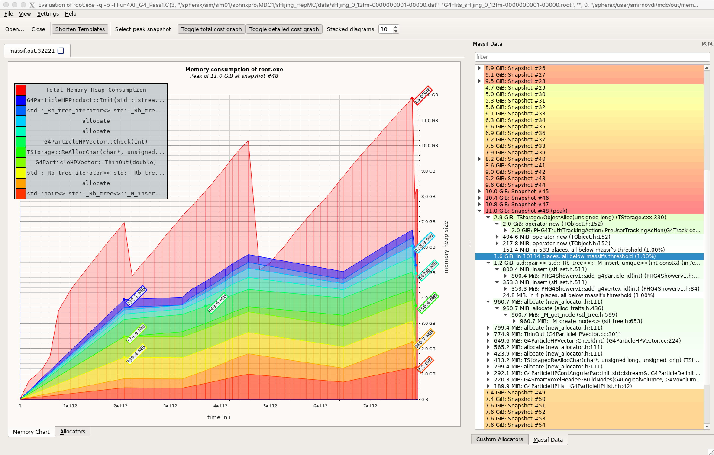
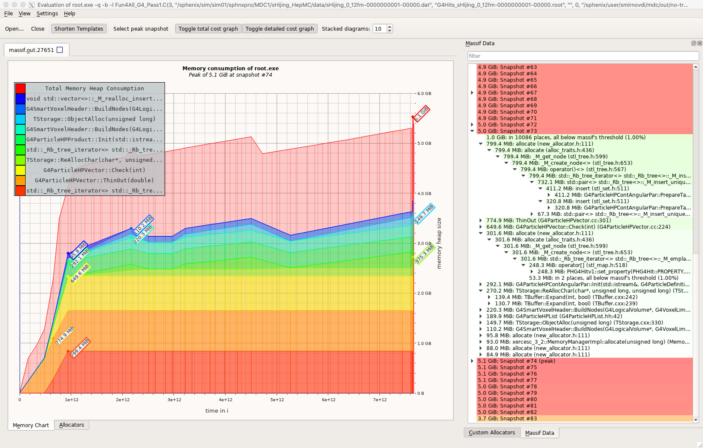

<h1>Investigating Memory Consumption</h1> - This study is based on `coresoftware@mdc1-1` and the steering macro from `MDC1/submit/pass1/rundir/` - Use a few Hijing events from a file in `/sphenix/sim/sim01/sphnxpro/MDC1/sHijing_HepMC/data/` - The simulation job can consume 20GB as reported by `top` and `ps` - Memory consumption is primarily performed with `valgrind --tool=massif`
<h1>Memory Profiler Results</h1>  <div style="font-size: 0.7em;"> - The total is less than RSS by `top` but still significant - Most of the memory represented by the bottom color bands allocated inside Geant4 routines - The total (red) includes significant contributions from `PHG4TruthTrackingAction::PreUserTrackingAction()` filling the `PHG4TruthInfoContainer` </div>
<h1>Memory Profiler Results</h1>  <div style="font-size: 0.7em;"> - Skip filling of `PHG4TruthInfoContainer` - Processed same three events - Memory consumption reduced by a few GBs </div>
<h1>Size of PHG4TruthInfoContainer</h1> - Established that the large part of the memory is used by the `PHG4TruthInfoContainer` - It incorporates three maps with data: particles, vertices, and showers - Roughly the number of entries in each of the maps are:<br> 20M, 10M, and 5k entries respectively (event #3) - Try to estimate the memory used by the container <pre style="width: 90%; font-size: 0.7em;"><code class="lang-cpp" data-trim> std::cout << sizeof(PHG4Particlev2) << ' ' << sizeof(PHG4Particlev3) << ' ' << sizeof(PHG4VtxPointv1) << ' ' << sizeof(PHG4Showerv1) << '\n'; </code></pre> - Output: </code><code class="shell" data-trim> 112 136 56 448 </code></pre> - `PHG4Showerv1` incorporates six maps and two sets - Rough estimate for the size of `PHG4TruthInfoContainer` ~ few GBs <pre style="width: 90%; font-size: 0.7em;"><code class="lang-cpp" data-trim> sizeof(PHG4Particlev2) * 20M + sizeof(PHG4VtxPointv1) * 10M + (sizeof(PHG4Showerv1) * 5k + sizeof(int) * 5k * 5k + ...) ~ 3GB </code></pre>
<h1>Thoughts</h1> <div style="font-size: 0.9em;"> - Based on STAR experience the size of sPHENIX simulation jobs is too big - In STAR jobs are under 2GB (reco and Geant3 simulation) - The large memory footprint seems to be based on significant and real memory allocations (as opposed to some inefficient memory management) - No filtering of Geant4 tracks is done before passing them to `PHG4TruthInfoContainer` - The filtering is done at the end of event prior to data is dumped to a ROOT file - The reduction is significant, at least ~95% - Can the decision about keeping the track be made in `PostUserTrackingAction()` rather than adding new tracks in `PreUserTrackingAction()`? - Memory profiler does not show large allocations related to ROOT IO (e.g. `TBuffer` ?) - As a test ROOT IO for the maps in `PHG4TruthInfoContainer` can be disabled with `//!` comment to see if it has impact on memory consumption - To save space on disk ROOT's `Double32_t` can be used for persistent types - The discrepancy between `top` and `valgrind` reports is not understood </div>